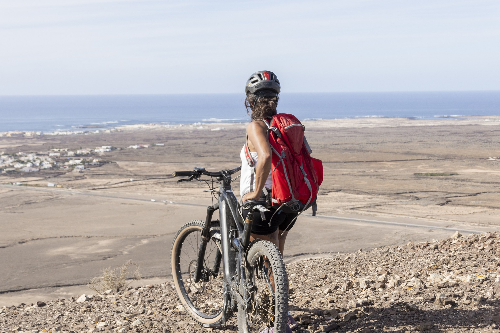
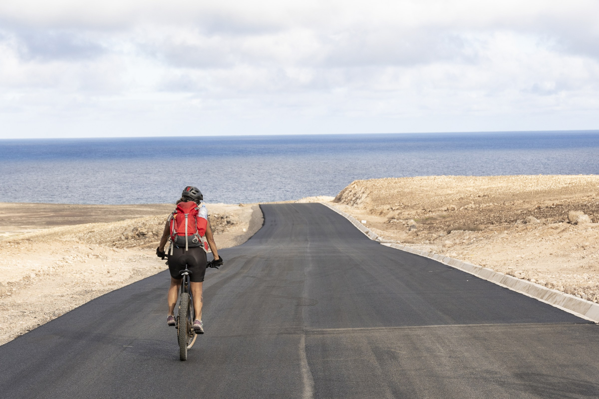
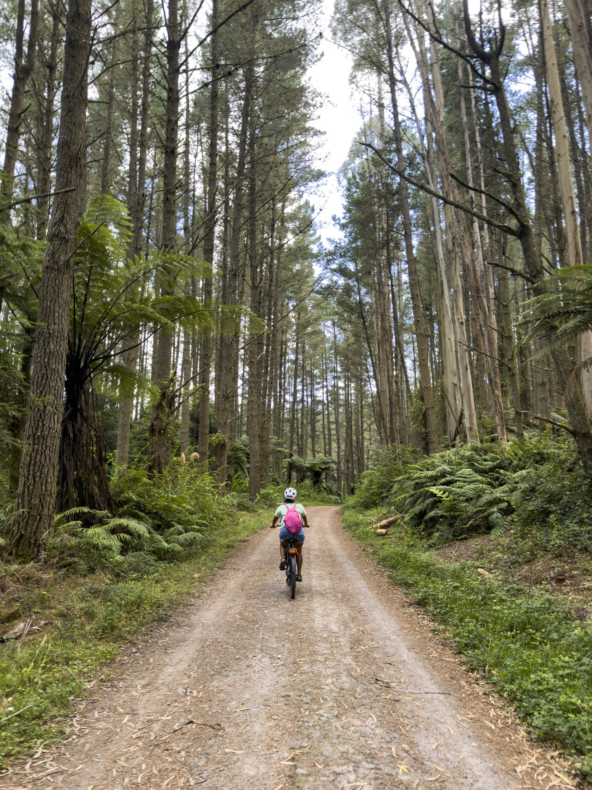
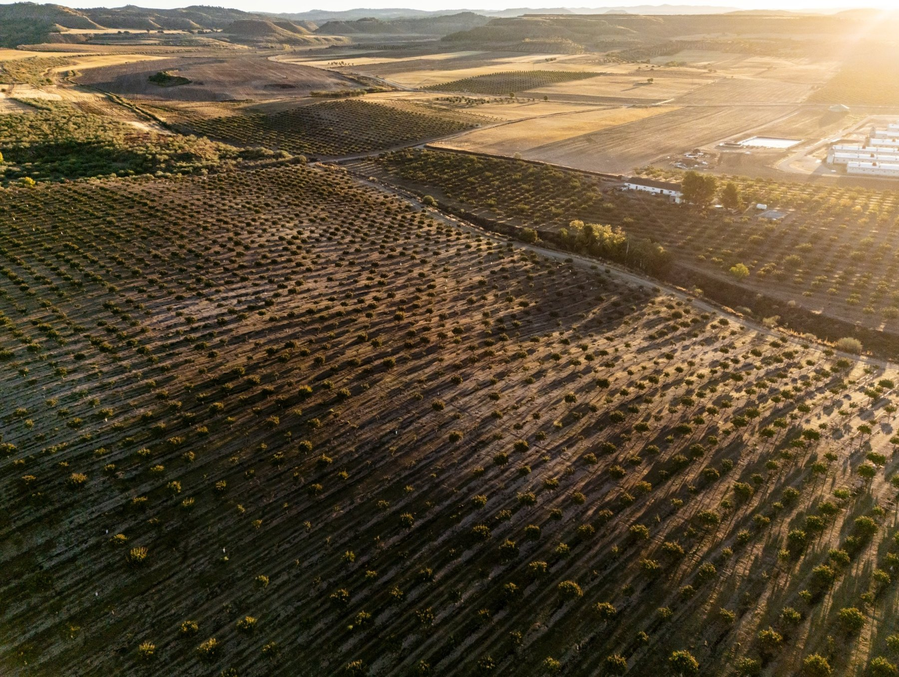
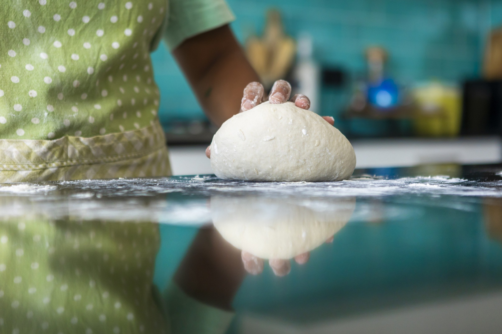

EL RECORRIDO
La experiencia en marcha
El ritmo de la ruta, el terreno y los momentos que invitan a descubrirla en bicicleta.

FOTOGRAFÍA Y VÍDEO · UNA PROPUESTA PARA TURICLETA
Imágenes que enseñan el camino, el destino y todo lo que ocurre entre los dos.
Descubrir la propuestaLA OPORTUNIDAD
Una ruta tiene mucho más que un punto de salida y otro de llegada. Tiene paisajes, pueblos, paradas y personas que hacen que el recorrido merezca la pena.
Propongo producir fotografía y vídeo para mostrar esas experiencias en las rutas y destinos que Turicleta quiera impulsar.
Explorar las rutas de Turicleta
UNA PRODUCCIÓN A MEDIDA
Podemos empezar con los itinerarios que queráis destacar y adaptar la producción a vuestros objetivos y canales.

El ritmo de la ruta, el terreno y los momentos que invitan a descubrirla en bicicleta.

Imágenes de entorno y vistas aéreas para mostrar qué hace especial a cada lugar.

El encuentro con la cultura, los productores y la gastronomía que forman parte del viaje.
Las fotografías son ejemplos del archivo de Juan Aizpuru. La producción propuesta se realizaría en las rutas seleccionadas con Turicleta.
CONOZCO LA RUTA DESDE LA BICI
Tengo bicicleta eléctrica y he hecho rutas largas. Conozco el ritmo de un recorrido, los cambios de terreno y esos momentos que hacen que quieras parar y mirar.
Esa experiencia me ayuda a planificar la producción y a identificar qué merece la pena mostrar, combinando fotografía, vídeo y tomas aéreas cuando el lugar y la normativa lo permitan.
Conocer mi trabajoEL RESULTADO
Material para presentar rutas, estaciones y destinos en web, redes y otros soportes de Turicleta.
Podéis utilizar las imágenes con vuestro equipo o desarrollar con nosotros una campaña adaptada a vuestras necesidades.
La selección de rutas, el alcance y la licencia de uso se acuerdan para cada proyecto. Juan Aizpuru conserva la autoría y la propiedad del material.
NOS VEMOS EN FITUR
Me encantaría conocer vuestros planes y explorar cómo podemos trabajar juntos.
Hablemos en FITUR